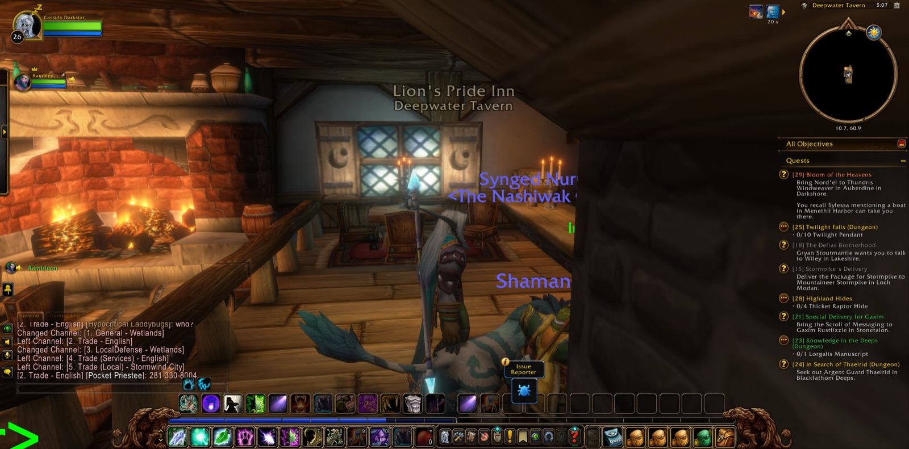
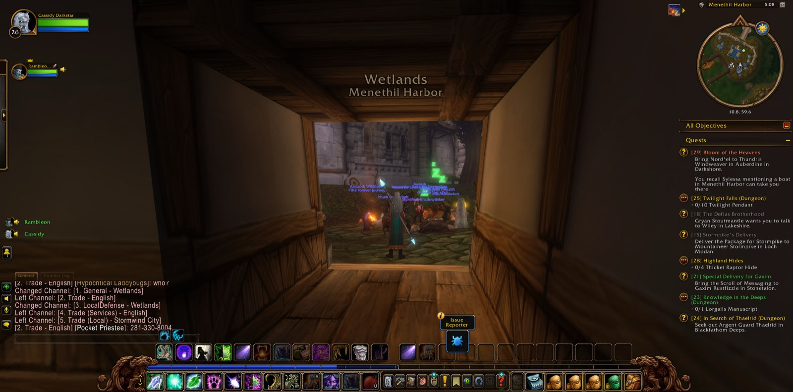
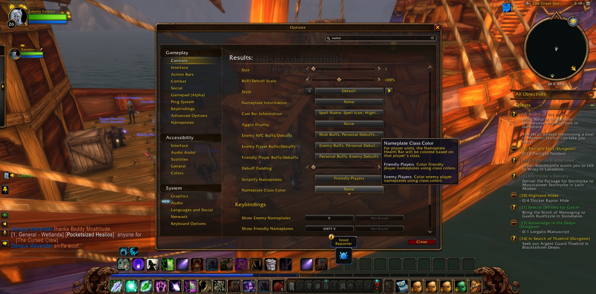
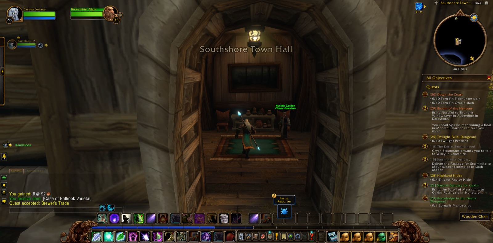

Cassidy Darkstar's road began again beneath the Cathedral of Light in Stormwind City, and there he did not stay long alone. Rambleon the Hunter joined him there, and more than once they renewed that fellowship before they set out, as travellers do who mean to keep the same road. Rambleon walked beside him for the whole of what followed, and in the end it was still the two of them together. Cassidy crossed Cathedral Square, and from there the tale turns west and over the water.
He came next to the Deepwater Tavern, and Cassidy marked the threshold with a picture. Then he went on into Menethil Harbor in the Wetlands, and there too he took a picture, as one sets a stone beside a path to show where a road has turned. Yet Menethil did not hold him. He went out to Baradin Bay and back again to the harbour, and then out once more to Baradin Bay. It was the restless going and returning of one who has not yet found the way he means to take.

At last that way opened before him. Cassidy passed out upon The Great Sea and came again to Baradin Bay. Then the waters of The Great Sea carried him north, and he came out of the Wetlands into Hillsbrad Foothills, and at that crossing he took a third picture. He set foot upon the Eastern Strand, passed along the Western Strand, and so came into Southshore. It was new ground, and it was the end of the long sea road.

In Southshore errands gathered quickly about him, as they do in any town that has troubles of its own. He took up the task called "A Lack of Virtue," which bade him bear Tom's Gift back to Bart Tidewater in Menethil Harbor in the Wetlands, the harbour he had only lately left. He saw through the matter of "The Shamed Lieutenant" and brought it to its close. That was the one errand fully done on this road, and it was done well. Then he accepted "Down the Coast," and after it "Brewer's Trade." He went into Southshore Town Hall, where he took a last picture, and there he took up a graver charge, "Syndicate Assassins." He came out again into the streets of Southshore with that charge upon him.

No new strength came to Cassidy in this stretch of the tale, and no foe fell before him. Yet he had crossed from the stones of Stormwind to the shores of Hillsbrad, a good companion still walked beside him, and four tasks now waited in his keeping. At the last he and Rambleon joined forces once more in Southshore. The coast ran on before them, and the road with it.